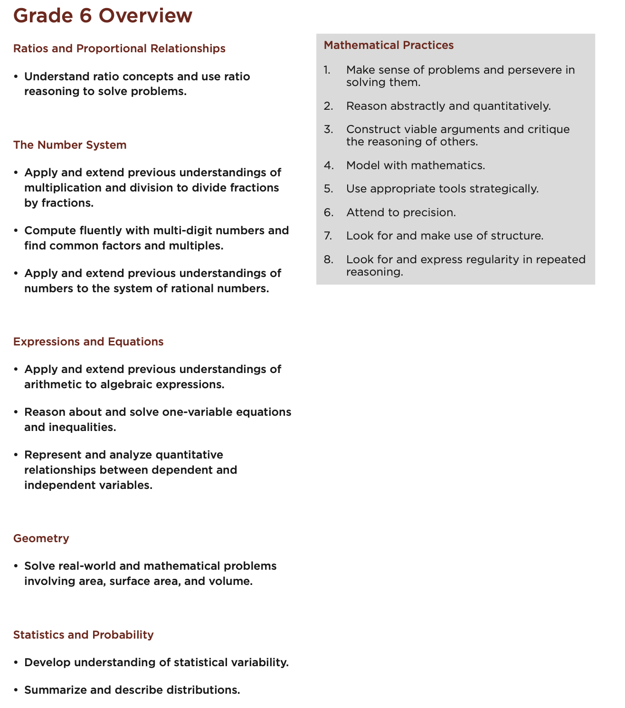
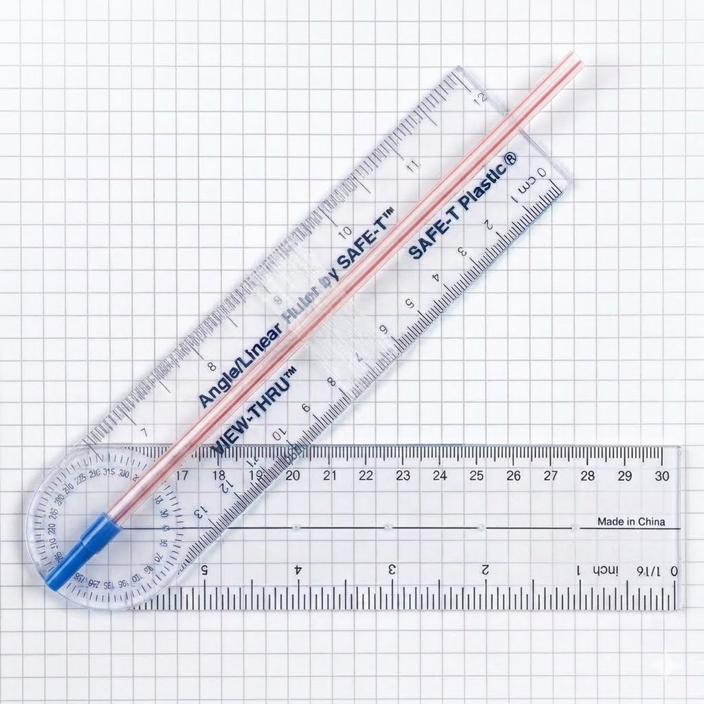

When we think of proportional reasoning, one of the areas of mathematics where we can truly "see" it is geometry. The ancient Greeks used a very special proportion in their artwork as well as architecture, The Golden Ratio. This ratio seemed to be found in nature and was deemed pleasing to the eye. In fact, the Fibonacci sequence, \(\left\{1,1,2,3,5,8,13, \ldots \right\}\text{,}\) has the interesting characteristic that the successive ratios of adjacent terms, \(\frac{F_n}{F_{n-1}}\text{,}\) approach The Golden Ratio as \(n \rightarrow \infty\text{.}\) You may recall that the Golden Ratio occurs when the ratio of the larger of two values to the smaller, \(a\) and \(b\text{,}\) is equal to the ratio of the sum of the two values to the larger of the two values. In other words, when \(0 \lt a \lt b\text{,}\) we have \(\frac{a+b}{b}=\frac{b}{a}=\varphi =\frac{1+\sqrt{5}}{2}\) where \(\varphi\) is typically used to represent this ratio. Just like the Fibonacci sequence that is seen throughout nature, The Golden Ratio also seems to be present all around us.
Since ratios seem to describe many patterns we see in the world, we should consider how the concept of ratio develops in students and try to identify an appropriate place in the curriculum to begin engaging our students with ideas related to ratio and proportion. When we examine the Common Core State Standards, the first place we see ratio finding its way into the curriculum is in Grade 6 (see Figure 3.1.1). While fractions are seen in Grade 3, the treatment of the concept of rational numbers as ratios has not yet reached the stage where ratio and proportion would be viewed as relational as we would see them within the context of scaled up or scaled down representations of relative amounts or unit rates.

Figure3.1.1.Overview of the Common Core State Standards for Grade 6
Subsection3.1.1Measuring Shadows: The Case of Cisco
Cisco is in his third year of teaching \(6^{th}\) grade mathematics. He is wanting to help his students develop a conceptual understanding of ratio and proportion beyond the procedural way he learned it. In his pre-service preparation, he remembered having fun indirectly measuring the height of a building on campus by using shadows on a sunny day and wants to try it with his students. He is concerned that if he simply tells them how to do it, the process will be perceived as a memorized algorithm and he will be back in the situation he grew up in where the understanding is lost on his students. He decided to first preface the activity with a dynamic geometry experience hoping the students might use what they discover to then suggest a method for measuring shadows as a way to indirectly measure the height of a pine tree in the school yard.
Activity3.1.1.Triangle within a Triangle.
Cisco : Today, I want us to explore what happens when we place a right triangle inside another right triangle. In this particular case we start with \(\triangle ABC\) and then create another triangle, \(\triangle ADE\text{,}\) by creating the segment \(\overline{DE} \parallel \overline{BC}\) as in Figure 3.1.2. What I want you to do is to play around with changing the triangles by moving points \(B\text{,}\)\(C\text{,}\) and \(D\) to see what you notice. After you have explored a bit, then answer the following questions to summarize your observations.
Figure3.1.2.Triangle in a Triangle
(a)
Since both triangles share a common angle, \(\angle CAB\text{,}\) and \(\overline{DE}\) and \(\overline{BC}\) are both perpendicular to \(\overline{AB}\text{,}\) what can you say about the angles in both triangles no matter how you change points \(B\text{,}\)\(C\text{,}\) and \(D\text{?}\)
(b)
How would you describe the "shapes" of the two triangles \(\triangle ABC\) and \(\triangle ADE\text{?}\)
(c)
To try and explain the nature of the "shape" of the triangles, imagine if you were to place a triangle on a copy machine and tell it to copy at 200%. If say side, \(\overline{BC}\text{,}\) of \(\triangle ABC\) measured to be 7 cm originally, how long would you expect its copied side, \(\overline{BC}\text{,}\) to be? Does this match with what you observed for the lengths when you manipulated points \(B\text{,}\)\(C\text{,}\) and \(D\text{?}\) Explain your thinking.
(d)
Now that you have used a thought experiment to consider how an enlarged copy of a triangle would behave, let’s consider the relative lengths inside both a small and large triangle with similar shapes. To the left in Figure 3.1.2, there are ratios of sides from both the small and large triangles. When you move around points \(B\text{,}\)\(C\text{,}\) and \(D\text{,}\) what do you notice about these ratios? Explain your thinking.
(e)
In Figure 3.1.2, move points \(B\text{,}\)\(C\text{,}\) and \(D\) until \(\overline{AB}=6\text{,}\)\(\overline{AD}=3\text{,}\) and \(\overline{BC}=3\text{.}\) Now think about our copy machine thought experiment. What percent copy would you need if you were wanting to copy \(\triangle ADE\) and make it to be the same size as \(\triangle ABC\text{?}\) What factor would you need to multiply side \(\overline{AD}\) by to get the length of \(\overline{AB}=6\text{?}\)
(f)
Will the same factor you used in part (e) work for converting the length of \(\overline{DE}\) to the length of \(\overline{BC}=3\text{?}\) Explain your thinking from your understanding of how a copy machine works.
(g)
If you use the same factor to multiply the length of \(\overline{DE}\) to get the length of \(\overline{BC}\) and to get the length of \(\overline{AB}\) from the length of \(\overline{AD}\text{,}\) what will happen to those factors when you divide \(\frac{\overline{BC}}{\overline{AB}}\text{?}\) How will their fractions compare? Does this match what you observed in Figure 3.1.2? Explain your thinking.
Now that Cisco has laid the groundwork for the real task he was wanting to pose, he approaches his students the next day in the following exchange.
Cisco : What I am wanting to do today is to try and find the height of the flagpole in front of the school. In your groups, try to think of some ways we could find this height. Summarize your ideas on your whiteboards and be read to share.
[Cisco gives the students 15 minutes to come up with some strategies and then brings the class back together.]
Cisco : OK, what have you come up with? Yeah, Group 4?
Nate : Well, we thought it might be easiest to just tie a piece of string onto the clips of the rope that’s already on the pole and then pull it up and then mark the string at the bottom. Then we lower the end of the string back down and measure the piece of string to the mark we made.
Cisco : What do you think of their idea?
Siera : That would be very easy to do. I think it will work.
Cisco : To get an idea of how this method might work, I took a picture of the flagpole this morning. Here it is. [Cisco displays the picture] If our goal is to find the height of the flagpole, can anyone see a problem with this approach? Take a couple of minutes to discuss it in your groups.
Cisco gives them 3 minutes to discuss and then brings the class back together]
Cisco : OK, does anyone see the problem I am concerned about? Yeah, Leah.
Leah : I think we see it. The rope attached to the pulley doesn’t go all the way to the top of the pole.
Cisco : Bingo! That was what I was thinking. Are their any work-arounds you can think of? Yeah, Cassie.
Cassie : What if we attached the string to a drone and flew it to the top of the pole? Then we could pull it tight and mark the bottom.
Cisco : That’s a great idea, Cassie. Does anyone have a drone? And more importantly, could you pilot it to land on top of the flagpole? Yeah, Ben.
Ben : I have a drone, but there is no way I could fly it to the top of the flagpole. I’m usually lucky to not lose it in the trees.
Cisco [laughs] : OK, so the drone is out. Let’s think of another way. There is a reason I am posing this task today right after our exploration from yesterday. Let’s take a few minutes to review what we did yesterday and put it in the perspective of today’s task. In your groups, discuss what we did yesterday and try to think of how we might use it for measuring the height of the flagpole.
[Cisco gives the groups 15 minutes to discuss the exploration from the previous day and the current task at hand and then brings the class back together]
Cisco : Any ideas? Yeah, Group 2?
Jules : We thought we could make a scale model keeping the angles the same like in the GeoGebra sketch. Yesterday, we had two triangles that were the same shape since all of the angle were the same and so we just need to find the factor we need to scale it up to the size of the flagpole. We just weren’t sure how to figure the angles to keep them the same.
Cisco : A scale model? That’s a great idea. We can assume the flagpole is perpendicular to the parking lot, so that will give us one angle. I like your idea of finding the scale factor to take the model and scale it up to the flagpole size. In the GeoGebra sketch, remember that the ratios on the left were always the same. Maybe we could use the small model to figure the ratio and then we would need just one side of the the other two sides of the big "flagpole" triangle to find the flagpole length. Yeah, Nori?
Nori : But if we can’t stretch a string from the top of the flagpole, how can we get the hypotenuse to have one other side of the big triangle?
Cisco : Good point. Maybe that means we need to rely on the other side? You know, like the one that would be along the ground? That would mean we need to get the angle at the top or the angle with the ground to be the same in both the model and the actual flagpole triangle. Any ideas? Yeah, Leah.
Leah : In history, we talked about how early the Greeks did things in math thousands of years ago. We read that some of the things they did used shadows to make models. Could we do something like that?
[Cisco had been waiting for this opportunity, so he decided to prompt a little to get them going in the direction he wanted them to go.]
Cisco : Can I make a suggestion? [class indicates a positive response] What if we use a sunny day and take something like a meter stick out to the parking lot. As long as we make sure to hold the meter stick perpendicular to the parking lot, say with a protractor, we could use the shadows of the meter stick and flagpole measured at the same time as the horizontal lengths in our two triangles. Since the meter stick is acting like the flagpole and the shadows are acting as the horizontal sides, we can find the scale factor using the meter stick and its shadow and then use the same factor with the flagpole’s shadow to find the length of the flagpole. Does this make sense? [class nods in approval]
Diyonn : But how do we know the two triangles have all the same angles? We only made use on of them was. You know, the right angle at the bottom.
Cisco : Good point, Diyonn. Anyone have a thought about this? Nate?
Nate : I think we can because the sun is shining at the same angle on both the stick and the flagpole as long as we measure at the same time. So the angle you would look at if you were trying to stare at the sun from the ground on both would be the same. Because the other angle is a right angle on both, that means the third angles would also have to be the same since it would just be \(90^{\circ}\) minus the angle at the bottom that are the same in both.
Cisco : Is everyone convinced? [class nods in agreement] Ok, let’s do this. Fortunately, it’s a sunny day out today. Well, partly sunny, so we will need to plan the make sure to be ready to measure in between any cloud that may come up. Each group have your materials manager get a meter stick from the cabinet along with a protractor and measuring tape. Then line up to go outside.
Activity3.1.2.Shadow Worlds.
Now that we have seen the discussion play out in Cisco’s class, let’s do the indirect measurement activity that his students would have completed. Your instructor will choose an object that would be difficult to directly measure and a sunny day to do this investigation. Like Cisco’s class, you will need a meter stick, protractor or angle ruler, and a measuring tape or string that can be measured later.
(a)
Place the meter stick perpendicular to the ground and have someone in your group hold it in place. Make sure you can clearly see its shadow when the sun is shining. Your instructor will pick a person to mark on the ground the end of the shadow for object you are trying to measure when given the signal.
(b)
When given the signal, measure and record the length of the shadow of your group’s meter stick.
(c)
Compute the ratio of the length of the meter stick (1 meter) to the length of your shadow and record your result.
(d)
To find the height of the object of interest, we can use the same ratio, call it \(r\text{,}\) that you found in part (c). If the shadow of the object had length, \(s\text{,}\) and the object has height, \(h\text{,}\) then \(r=\frac{h}{s}\) and so \(h=r\cdot s\text{.}\) Compute your group’s estimate for the height of the object.
Subsection3.1.2Angles and Cisco’s Extension
Cisco was so pleased with how his students reasoned about the angles and shadows to solve a real-world problem, he wanted to see how far he could extend their understanding to functional relationships between angles and ratios for right triangles. He knew that trigonometry was still a ways off in the curricular trajectory, but he felt that since they had solid reasoning about the angle relationships in figuring out the height of the flagpole, he would reach back to his GeoGebra sketch (Figure 3.1.2) and see if they could understand the functional relationship between an angle and the ratio of sides in a right triangle. We pick up his class discussion the next day after they had approximated the height of the flagpole.
Cisco : OK. Yesterday we were very lucky that the sun was shining so we could measure both shadows. But what if the sun was not shining? Would there be a way to still indirectly measure the height of the flagpole? I got to thinking about something last night. Yesterday, Jules had an interesting idea she shared about wanting to make a scale model, but her group was having trouble figuring how to deal with the angles. We avoided her problem by not measuring angles at all, but instead arguing that the angle for the shadow triangles would need to be the same and so we could just use the meter stick triangle to get the ratio we needed to scale up to the flagpole triangle. But what if we had the angle that the sun made with the shadow on the ground? Would that be enough? Today I am going to have you explore this a bit. In your groups, I want you to answer the following questions using the GeoGebra sketch (Figure 3.1.2) we used before.
Activity3.1.3.Angles and Ratios.
One way we can measure angles is using an angle ruler along with a straw attached to it (see Figure 3.1.3). Using this simple device, we can look through the straw at the top of the object whose height we want to measure and read the angle on the angle ruler.

Figure3.1.3.Angle Ruler with Straw
Now if we can somehow find a relationship between the angle and the ratio of sides, we can side-step the need to measure the shadow of the smaller triangle we used in the shadow experiment to find the ratio. Let’s explore this relationship.
(a)
Using the GeoGebra sketch (Figure 3.1.2), drag point \(D\) to make varying sized triagles. Describe what you notice about the ratio \(\frac{DE}{AD}\) for a fixed angle \(\angle{EAD}\) no matter how large or small the triangle is?
(b)
Now drag point \(C\) to change the angle and repeat what you did in part (a). Describe what you notice about the ratio when the angle measure is fixed to its new value.
(c)
Adjust the location of point \(C\) to create \(\angle{EAD}\) with the measures in the following table and record the corresponding ratios that go with each angle.
Angle, \(\theta\)
\(10^\circ\)
\(20^\circ\)
\(30^\circ\)
\(40^\circ\)
\(50^\circ\)
\(60^\circ\)
\(70^\circ\)
Ratio
\(\)
\(\)
\(\)
\(\)
\(\)
\(\)
\(\)
(d)
Create a scatterplot of the ratios as a function of the angle and sketch your results. Do you see a pattern in the data? Explain. What happens to the ratio value as the angle gets closer to \(90^{\circ}\text{?}\) What happens to the ratio value as the angle gets closer to \(0^{\circ}\text{?}\)
[Cisco brings the class back together for a discussion of their observations]
Cisco : OK, now that you have looked at what happens when you fix and angle and adjust the size of the triangle, can anyone tell me what you see in terms of the ratio? Yeah, Nate.
Nate : Well, we saw that if you keep the angle at the bottom the same, it doesn’t matter how big or small the triangle is, the ratio of the two sides is always the same. It’s kind of the same as we saw in the activity we did yesterday.
Cisco : So what I’m hearing is that if we know the angle, we should be able to know the ratio? Is that a fair summary of what you are saying?
Nate : Yeah, I guess. We hadn’t really thought about it that way, but yeah. That would work. That’s kind of the same thing. But if we didn’t measure the things in the sketch, how would we know the ratio for an angle?
Cisco : That’s a great question, Nate. Now when you get to high school, you will study this in greater depth, but for now, just know that when it comes to right triangles like these, we give names to the ratios of different combinations of sides for a given angle. In this case, we call the ratio of the "opposite" to "adjacent" sides the "tangent" of the angle. [Cisco draws a right triangle on the board and labels the sides and angle]. Can you see why we call this side [pointing to the opposite side] the "opposite" and this side [pointing to the adjacent side] the "adjacent" side? [class responds postively. Yeah, Leah?
Leah : But, like Nate said, how do we know the ratio if we have the angle?
Cisco : Well, every scientific calculator has these ratios built in. Take out your calculators. [students take out their calculators]. See that trig button? Press it. Now you will see other options you can select. Select the tan button and put in \(\tan \left(23^{\circ}\right)\) and press enter. What do you get?
Ben : I got like 0.42447.
Cisco : Do you notice anything about that number?
Siera : It’s like between what we had for \(20^{\circ}\) and \(30^{\circ}\) we had in our tables.
Cisco : Good observation. Now take your table from before and use the tangent command to fill it in with what you get from the calculator.
Angle, \(\theta\)
\(10^\circ\)
\(20^\circ\)
\(30^\circ\)
\(40^\circ\)
\(50^\circ\)
\(60^\circ\)
\(70^\circ\)
\(\tan \left(\theta\right)\)
\(\)
\(\)
\(\)
\(\)
\(\)
\(\)
\(\)
[groups take a few minutes and fill in the table]
Cisco : What do you see?
Patrick : They are the same as what we had before.
Cisco : So the table you made before by using the measurements was really just the tangent function. Now let’s use the tangent feature of your calculator to find the height of the flagpole. Grab the tape measure, angle ruler, and a straw and let’s go outside.
[Class grabs materials and heads out to the flagpole.]
Activity3.1.4.The Flagpole Revisited.
Using what we know about the tangent function, we only need to measure a distance from the base of the flagpole and the angle of elevation to find the height of the flagpole.
(a)
Pick a point a fair distance away from the flagpole and measure the distance. Record your distance.
(b)
Have one of your group members tape the straw along the line on the upper side of the angle ruler as shown in Figure 3.1.3. Then have your group member lay on the ground and look through the straw until you see the top of the flagpole through the straw. Be certain to keep the other side of the angle ruler horizontal to the ground. Record the angle you get between the ground and the line of sight to the top of the flagpole.
(c)
Since we know that \(\tan \left(\theta\right)=\frac{o}{a}\) where \(o\) is the opposite side of the triangle and \(a\) is the adjacent side, we can find the opposite side (in this case the height of the flagpole), by rearranging this to \(o=a \cdot \tan \left(\theta\right)\text{.}\) Use your measurements for the distance from the base of the flagpole and the angle of elevation to approximate the height of the flagpole. How does your result compare with what you got when you computed it using shadows? Explain.